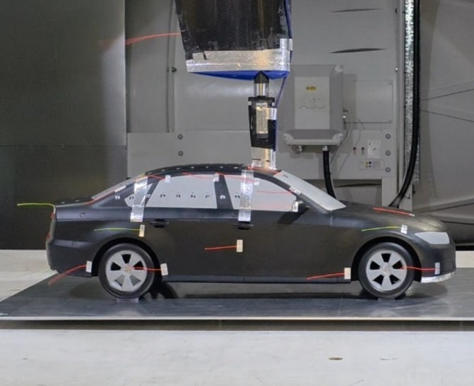
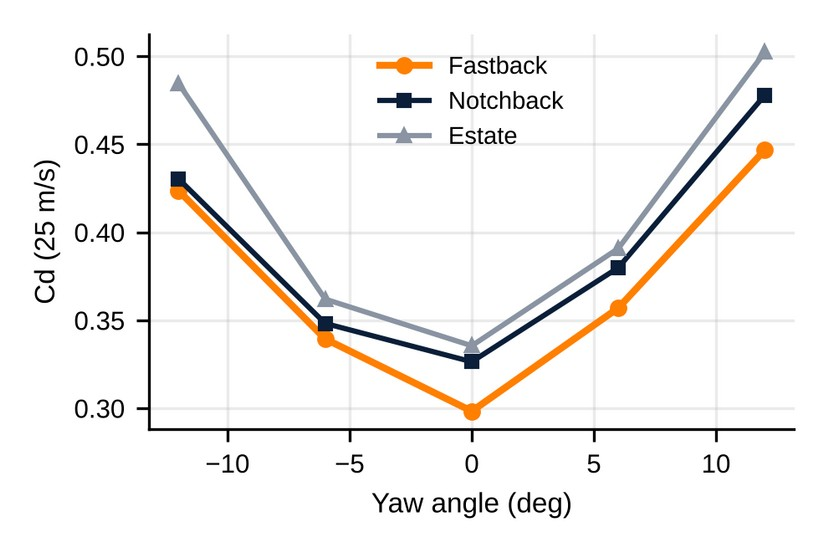
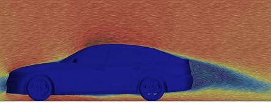
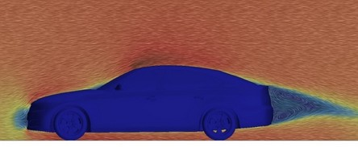

Sheet 1 · Wind tunnel
DrivAer wind-tunnel model and CFD study
A 20% scale DrivAer model tested with three rear ends (fastback, notchback, estate) and two underbodies, then the same cases in CFD.
- Led the team that CAD-modelled and FDM 3D-printed the model, with 62 surface-pressure taps.
- Planned the test programme: forces, Reynolds-number sweeps, ±12° yaw and wool-tuft visualisation.
- Built a 3.63-million-cell STAR-CCM+ model, mesh-independent to within 2% Cd.
5.1% / 1.1%CFD vs tunnel, Cd / CL
−5.3%Drag, smooth underbody (lift +27%)
What it taught me: the data is only as good as the model. Accurate geometry and repeatable configuration changes decide whether a 5% difference is real. Recommended next step: keep the detailed underbody and add a front splitter to bring lift towards neutral.




Scale1:5 (20%)
RoleGroup lead, team of 5
ToolsCAD, FDM, STAR-CCM+
DateApr 2026
ContextMSc Aerodynamics